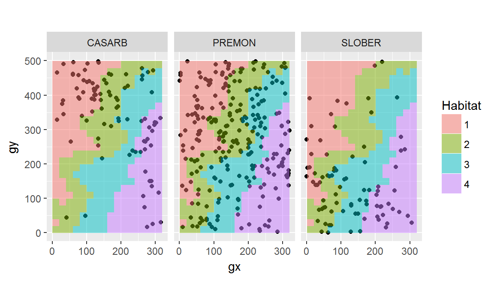

Habitat-species associations
Mauro Lepore
2018-04-25
Given a number of species and habitat types in a plot, is each species significantly aggregated within habitats?
We’ll answer this question with the function torusonesp.all(), developed by Sabrina Russo, Daniel Zuleta, Matteo Detto, and Kyle Harms.
Setup
For details on how to install packages from GitHub, see this article.
library(fgeo.habitat)
# Packages for data wranging and visualization
library(tidyverse)
#> -- Attaching packages --------------------------------------------- tidyverse 1.2.1 --
#> v ggplot2 2.2.1 v purrr 0.2.4
#> v tibble 1.4.2 v dplyr 0.7.4
#> v tidyr 0.8.0 v stringr 1.3.0
#> v readr 1.1.1 v forcats 0.3.0
#> -- Conflicts ------------------------------------------------ tidyverse_conflicts() --
#> x dplyr::filter() masks stats::filter()
#> x dplyr::lag() masks stats::lag()Load census and habitat data
This example uses a small dataset from Luquillo.
census <- luquillo_top3_sp
str(census)
#> Classes 'tbl_df', 'tbl' and 'data.frame': 434 obs. of 19 variables:
#> $ treeID : int 180 631 1380 1840 2849 3354 3690 4183 5182 5632 ...
#> $ stemID : int 225 775 1702 2240 3421 4054 4486 5086 6312 6841 ...
#> $ tag : chr "100171" "10069" "101560" "10208" ...
#> $ StemTag : chr "100174" "10069" "101560" "10208" ...
#> $ sp : chr "CASARB" "PREMON" "CASARB" "PREMON" ...
#> $ quadrat : chr "921" "213" "820" "613" ...
#> $ gx : num 164.6 38.3 141.9 115.5 79.2 ...
#> $ gy : num 410 245 386 245 389 ...
#> $ MeasureID: int 617049 598429 614023 607825 603814 599273 585007 590860 585935 594643 ...
#> $ CensusID : int 6 6 6 6 6 6 6 6 6 6 ...
#> $ dbh : num 46.1 139 NA 161 60 NA 146 NA 140 174 ...
#> $ pom : chr "1.35" "1.25" NA "1.3" ...
#> $ hom : num 1.34 1.25 NA 1.28 1.3 NA 1.3 NA 1.34 1.31 ...
#> $ ExactDate: num 17017 16912 17014 16918 17009 ...
#> $ DFstatus : chr "alive" "alive" "dead" "alive" ...
#> $ codes : chr "SPROUT;A" "MAIN;A" "MAIN;DEADT" "MAIN;A" ...
#> $ nostems : num 2 1 1 1 1 2 1 1 1 1 ...
#> $ status : chr "A" "A" "D" "A" ...
#> $ date : num NA NA NA NA NA NA NA NA NA NA ...The habitat data is based on measurements of elevation every 20 meters. (You may create habitats data with fgeo.tool::create_habitat()).
habitat_data <- luquillo_habitat
# Must have
names(habitat_data)
#> [1] "x" "y" "habitats"
str(habitat_data)
#> Classes 'tbl_df', 'tbl' and 'data.frame': 400 obs. of 3 variables:
#> $ x : num 0 0 0 0 0 0 0 0 0 0 ...
#> $ y : num 0 20 40 60 80 100 120 140 160 180 ...
#> $ habitats: int 2 1 2 2 2 1 1 1 1 1 ...To load your own data, you may run something like this:
load("<PATH>/<CENSUS_DATA>.rdata")
census_data <- <CENSUS_DATA>
load("<PATH>/<HABITAT_DATA>.rdata")
habitat_data <- <HABITAT_DATA>We can overview the relationship between species an habitats with a plot.
offset <- 20 / 2
habitat_centered <- mutate(
habitat_data,
# Center species and habitat data
x = x + offset,
y = y + offset,
# From continuous to categorical
habitats = as.factor(habitats)
)
ggplot(census, aes(x = gx, y = gy)) +
geom_raster(data = habitat_centered, aes(x, y, fill = habitats)) +
geom_point() +
coord_fixed() +
facet_wrap(~sp) +
labs(fill = "Habitat")
Pick data
Let’s pick alive trees, of 10 mm or more, and of sufficiently abundant species.
# The pipe (`%>%`) helps to avoid saving temporary intermediary objects
pick <- census %>%
# Keep only alive
filter(status == "A") %>%
# Keep dbh of 10 mm or more (drops missing dbh)
filter(dbh >= 10) %>%
# Keep sufficiently abundant trees
add_count(sp) %>%
filter(n > 50)
# View
unique(select(pick, sp, n))
#> # A tibble: 3 x 2
#> sp n
#> <chr> <int>
#> 1 CASARB 66
#> 2 PREMON 234
#> 3 SLOBER 66The habitat data suggests the plot dimensions and grid size we should use (details).
Abundance per quadrat
torusonesp.all() requires abundance per quadrat in a particular format, as calculated with abundanceperquad() from the original CTFSRPackage.
# WARNING: Default keeps only trees which dbh > 10 mm, which drops missing dbh.
# We did such selection explicitely above, but keep this in mind. For details
# see ?abundanceperquad.
abundance_per_quadrat <- abundanceperquad(
pick,
plotdim = plot_dimensions,
gridsize = grid_size,
)$abund
str(abundance_per_quadrat, list.len = 5)
#> 'data.frame': 3 obs. of 400 variables:
#> $ 1 : num 0 1 0
#> $ 2 : num 0 0 0
#> $ 3 : num 0 0 0
#> $ 4 : num 0 0 0
#> $ 5 : num 0 0 0
#> [list output truncated]Now we have all we need to run torusonesp.all() for one and multiple species.
one_species <- unique(pick$sp)[[1]]
out_one <- torusonesp.all(
species = one_species,
hab.index20 = habitat_data,
allabund20 = abundance_per_quadrat,
plotdim = plot_dimensions,
gridsize = grid_size
)
# Friendly view
t(out_one)
#> CASARB
#> N.Hab.1 25.000
#> Gr.Hab.1 1489.000
#> Ls.Hab.1 109.000
#> Eq.Hab.1 2.000
#> Rep.Agg.Neut.1 0.000
#> Obs.Quantile.1 0.931
#> N.Hab.2 12.000
#> Gr.Hab.2 168.000
#> Ls.Hab.2 1431.000
#> Eq.Hab.2 1.000
#> Rep.Agg.Neut.2 0.000
#> Obs.Quantile.2 0.105
#> N.Hab.3 14.000
#> Gr.Hab.3 567.000
#> Ls.Hab.3 1029.000
#> Eq.Hab.3 4.000
#> Rep.Agg.Neut.3 0.000
#> Obs.Quantile.3 0.354
#> N.Hab.4 15.000
#> Gr.Hab.4 934.000
#> Ls.Hab.4 661.000
#> Eq.Hab.4 5.000
#> Rep.Agg.Neut.4 0.000
#> Obs.Quantile.4 0.584To iterate over multiple species you may write a for loop, or use a functional such as lapply().
all_species <- unique(pick$sp)
out_all <- lapply(
all_species,
torusonesp.all,
hab.index20 = habitat_data,
allabund20 = abundance_per_quadrat,
plotdim = plot_dimensions,
gridsize = grid_size
)
# Friendly view
t(Reduce(rbind, out_all))
#> CASARB PREMON SLOBER
#> N.Hab.1 25.000 59.000 14.000
#> Gr.Hab.1 1489.000 389.000 492.000
#> Ls.Hab.1 109.000 1208.000 1092.000
#> Eq.Hab.1 2.000 3.000 16.000
#> Rep.Agg.Neut.1 0.000 0.000 0.000
#> Obs.Quantile.1 0.931 0.243 0.307
#> N.Hab.2 12.000 75.000 16.000
#> Gr.Hab.2 168.000 1562.000 473.000
#> Ls.Hab.2 1431.000 37.000 1125.000
#> Eq.Hab.2 1.000 1.000 2.000
#> Rep.Agg.Neut.2 0.000 1.000 0.000
#> Obs.Quantile.2 0.105 0.976 0.296
#> N.Hab.3 14.000 56.000 19.000
#> Gr.Hab.3 567.000 632.000 1181.000
#> Ls.Hab.3 1029.000 963.000 415.000
#> Eq.Hab.3 4.000 5.000 4.000
#> Rep.Agg.Neut.3 0.000 0.000 0.000
#> Obs.Quantile.3 0.354 0.395 0.738
#> N.Hab.4 15.000 44.000 17.000
#> Gr.Hab.4 934.000 222.000 1151.000
#> Ls.Hab.4 661.000 1375.000 440.000
#> Eq.Hab.4 5.000 3.000 9.000
#> Rep.Agg.Neut.4 0.000 0.000 0.000
#> Obs.Quantile.4 0.584 0.139 0.719Wrapper
We can wrap the code to run the Torus Translation Test into a convenient function, ttt(), to abstract out the boilperate code and focus on what matters most.
ttt <- function(sp, ...) {
out <- lapply(sp, torusonesp.all, ...)
t(Reduce(rbind, out))
}
two_species <- sample(unique(pick$sp), 2)
ttt(
two_species,
hab.index20 = habitat_data,
allabund20 = abundance_per_quadrat,
plotdim = plot_dimensions,
gridsize = grid_size
)
#> CASARB PREMON
#> N.Hab.1 25.000 59.000
#> Gr.Hab.1 1489.000 389.000
#> Ls.Hab.1 109.000 1208.000
#> Eq.Hab.1 2.000 3.000
#> Rep.Agg.Neut.1 0.000 0.000
#> Obs.Quantile.1 0.931 0.243
#> N.Hab.2 12.000 75.000
#> Gr.Hab.2 168.000 1562.000
#> Ls.Hab.2 1431.000 37.000
#> Eq.Hab.2 1.000 1.000
#> Rep.Agg.Neut.2 0.000 1.000
#> Obs.Quantile.2 0.105 0.976
#> N.Hab.3 14.000 56.000
#> Gr.Hab.3 567.000 632.000
#> Ls.Hab.3 1029.000 963.000
#> Eq.Hab.3 4.000 5.000
#> Rep.Agg.Neut.3 0.000 0.000
#> Obs.Quantile.3 0.354 0.395
#> N.Hab.4 15.000 44.000
#> Gr.Hab.4 934.000 222.000
#> Ls.Hab.4 661.000 1375.000
#> Eq.Hab.4 5.000 3.000
#> Rep.Agg.Neut.4 0.000 0.000
#> Obs.Quantile.4 0.584 0.139Scaling up
Our result doesn’t scale up very well. As the number of species increases the resulting matrix becomes harder to interpret and handle.
bigger_census <- luquillo_tree6_random %>%
filter(status == "A", dbh >= 10) %>%
add_count(sp) %>%
filter(n > 15)
abundance <- abundanceperquad(
bigger_census, plotdim = plot_dimensions, gridsize = grid_size
)$abund
many_sp <- unique(bigger_census$sp)
bigger_result <- ttt(
many_sp,
hab.index20 = habitat_data,
allabund20 = abundance,
plotdim = plot_dimensions,
gridsize = grid_size
)
bigger_result
#> DACEXC CASARB PREMON SCHMOR MANBID CASSYL
#> N.Hab.1 3.000 25.000 59.000 6.000 13.000 7.00e+00
#> Gr.Hab.1 64.000 1511.000 605.000 623.000 1076.000 9.23e+02
#> Ls.Hab.1 1532.000 80.000 990.000 968.000 519.000 6.72e+02
#> Eq.Hab.1 4.000 9.000 5.000 9.000 5.000 5.00e+00
#> Rep.Agg.Neut.1 0.000 0.000 0.000 0.000 0.000 0.00e+00
#> Obs.Quantile.1 0.040 0.944 0.378 0.389 0.672 5.77e-01
#> N.Hab.2 8.000 12.000 75.000 12.000 10.000 3.00e+00
#> Gr.Hab.2 598.000 219.000 1577.000 1474.000 440.000 6.60e+01
#> Ls.Hab.2 997.000 1379.000 22.000 125.000 1157.000 1.53e+03
#> Eq.Hab.2 5.000 2.000 1.000 1.000 3.000 4.00e+00
#> Rep.Agg.Neut.2 0.000 0.000 1.000 0.000 0.000 0.00e+00
#> Obs.Quantile.2 0.374 0.137 0.986 0.921 0.275 4.13e-02
#> N.Hab.3 7.000 14.000 56.000 2.000 15.000 1.20e+01
#> Gr.Hab.3 443.000 466.000 333.000 72.000 1346.000 1.56e+03
#> Ls.Hab.3 1152.000 1132.000 1264.000 1525.000 253.000 3.40e+01
#> Eq.Hab.3 5.000 2.000 3.000 3.000 1.000 2.00e+00
#> Rep.Agg.Neut.3 0.000 0.000 0.000 0.000 0.000 1.00e+00
#> Obs.Quantile.3 0.277 0.291 0.208 0.045 0.841 9.78e-01
#> N.Hab.4 15.000 15.000 44.000 7.000 7.000 4.00e+00
#> Gr.Hab.4 1576.000 888.000 165.000 1097.000 230.000 4.14e+02
#> Ls.Hab.4 22.000 708.000 1432.000 495.000 1366.000 1.18e+03
#> Eq.Hab.4 2.000 4.000 3.000 8.000 4.000 8.00e+00
#> Rep.Agg.Neut.4 1.000 0.000 0.000 0.000 0.000 0.00e+00
#> Obs.Quantile.4 0.985 0.555 0.103 0.686 0.144 2.59e-01
#> INGLAU TETBAL CECSCH SLOBER PSYBER
#> N.Hab.1 7.00e+00 6.00e+00 6.000 14.000 4.000
#> Gr.Hab.1 1.56e+03 1.20e+03 530.000 536.000 824.000
#> Ls.Hab.1 4.10e+01 3.92e+02 1060.000 1062.000 767.000
#> Eq.Hab.1 2.00e+00 8.00e+00 10.000 2.000 9.000
#> Rep.Agg.Neut.1 0.00e+00 0.00e+00 0.000 0.000 0.000
#> Obs.Quantile.1 9.73e-01 7.50e-01 0.331 0.335 0.515
#> N.Hab.2 4.00e+00 3.00e+00 9.000 16.000 3.000
#> Gr.Hab.2 7.29e+02 3.33e+02 1119.000 590.000 623.000
#> Ls.Hab.2 8.63e+02 1.26e+03 476.000 1005.000 969.000
#> Eq.Hab.2 8.00e+00 8.00e+00 5.000 5.000 8.000
#> Rep.Agg.Neut.2 0.00e+00 0.00e+00 0.000 0.000 0.000
#> Obs.Quantile.2 4.56e-01 2.08e-01 0.699 0.369 0.389
#> N.Hab.3 1.00e+00 7.00e+00 9.000 19.000 6.000
#> Gr.Hab.3 1.90e+01 1.44e+03 1206.000 1060.000 1172.000
#> Ls.Hab.3 1.58e+03 1.57e+02 391.000 537.000 427.000
#> Eq.Hab.3 2.00e+00 4.00e+00 3.000 3.000 1.000
#> Rep.Agg.Neut.3 0.00e+00 0.00e+00 0.000 0.000 0.000
#> Obs.Quantile.3 1.19e-02 8.99e-01 0.754 0.662 0.733
#> N.Hab.4 4.00e+00 1.00e+00 5.000 17.000 4.000
#> Gr.Hab.4 1.11e+03 1.23e+02 571.000 1100.000 1035.000
#> Ls.Hab.4 4.85e+02 1.47e+03 1020.000 497.000 562.000
#> Eq.Hab.4 9.00e+00 9.00e+00 9.000 3.000 3.000
#> Rep.Agg.Neut.4 0.00e+00 0.00e+00 0.000 0.000 0.000
#> Obs.Quantile.4 6.91e-01 7.69e-02 0.357 0.688 0.647A solution is to convert the resulting object to a friendly long-format dataframe.
long_result <- bigger_result %>%
as.data.frame() %>%
add_column(metric = rownames(bigger_result)) %>%
gather(key = "sp", value = "value", -metric)
head(long_result)
#> metric sp value
#> 1 N.Hab.1 DACEXC 3.00
#> 2 Gr.Hab.1 DACEXC 64.00
#> 3 Ls.Hab.1 DACEXC 1532.00
#> 4 Eq.Hab.1 DACEXC 4.00
#> 5 Rep.Agg.Neut.1 DACEXC 0.00
#> 6 Obs.Quantile.1 DACEXC 0.04Once again, we could wrap the re-formatting code into a handy function.
gather_ttt <- function(ttt) {
ttt %>%
as.data.frame() %>%
add_column(metric = rownames(ttt)) %>%
gather(key = "sp", value = "value", -metric)
}
long_result <- gather_ttt(bigger_result)With this format, the dataframe is easier to manipulate, summarize and visualize. For example:
- Filtering interesting species.
top_sp <- bigger_census %>%
count(sp) %>%
top_n(5) %>%
pull(sp)
#> Selecting by nn
top_sp
#> [1] "CASARB" "DACEXC" "MANBID" "PREMON" "SLOBER"
result_top_sp <- filter(long_result, sp %in% top_sp)
# Friendly view
spread(result_top_sp, sp, value)
#> metric CASARB DACEXC MANBID PREMON SLOBER
#> 1 Eq.Hab.1 9.000 4.000 5.000 5.000 2.000
#> 2 Eq.Hab.2 2.000 5.000 3.000 1.000 5.000
#> 3 Eq.Hab.3 2.000 5.000 1.000 3.000 3.000
#> 4 Eq.Hab.4 4.000 2.000 4.000 3.000 3.000
#> 5 Gr.Hab.1 1511.000 64.000 1076.000 605.000 536.000
#> 6 Gr.Hab.2 219.000 598.000 440.000 1577.000 590.000
#> 7 Gr.Hab.3 466.000 443.000 1346.000 333.000 1060.000
#> 8 Gr.Hab.4 888.000 1576.000 230.000 165.000 1100.000
#> 9 Ls.Hab.1 80.000 1532.000 519.000 990.000 1062.000
#> 10 Ls.Hab.2 1379.000 997.000 1157.000 22.000 1005.000
#> 11 Ls.Hab.3 1132.000 1152.000 253.000 1264.000 537.000
#> 12 Ls.Hab.4 708.000 22.000 1366.000 1432.000 497.000
#> 13 N.Hab.1 25.000 3.000 13.000 59.000 14.000
#> 14 N.Hab.2 12.000 8.000 10.000 75.000 16.000
#> 15 N.Hab.3 14.000 7.000 15.000 56.000 19.000
#> 16 N.Hab.4 15.000 15.000 7.000 44.000 17.000
#> 17 Obs.Quantile.1 0.944 0.040 0.672 0.378 0.335
#> 18 Obs.Quantile.2 0.137 0.374 0.275 0.986 0.369
#> 19 Obs.Quantile.3 0.291 0.277 0.841 0.208 0.662
#> 20 Obs.Quantile.4 0.555 0.985 0.144 0.103 0.688
#> 21 Rep.Agg.Neut.1 0.000 0.000 0.000 0.000 0.000
#> 22 Rep.Agg.Neut.2 0.000 0.000 0.000 1.000 0.000
#> 23 Rep.Agg.Neut.3 0.000 0.000 0.000 0.000 0.000
#> 24 Rep.Agg.Neut.4 0.000 1.000 0.000 0.000 0.000- Producing analytic summaries.
result_top_sp %>%
group_by(metric) %>%
summarise(mean = mean(value), max = max(value), min = min(value))
#> # A tibble: 24 x 4
#> metric mean max min
#> <chr> <dbl> <dbl> <dbl>
#> 1 Eq.Hab.1 5.00 9. 2.
#> 2 Eq.Hab.2 3.20 5. 1.
#> 3 Eq.Hab.3 2.80 5. 1.
#> 4 Eq.Hab.4 3.20 4. 2.
#> 5 Gr.Hab.1 758. 1511. 64.
#> 6 Gr.Hab.2 685. 1577. 219.
#> 7 Gr.Hab.3 730. 1346. 333.
#> 8 Gr.Hab.4 792. 1576. 165.
#> 9 Ls.Hab.1 837. 1532. 80.
#> 10 Ls.Hab.2 912. 1379. 22.
#> # ... with 14 more rows- Producing visual summaries.
ggplot(result_top_sp, aes(sp, value, color = sp)) +
geom_point() +
facet_wrap("metric", scales = "free_y") +
theme(axis.text.x = element_blank())